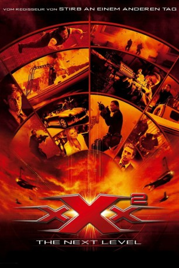

gesehen am 29.12.2016
gesehen am 29.12.2016Alternativ: xXx: State of the Union gesehen am 29.12.2016
 
 IMDB-Wertung: 4.4 / 10
IMDB-Wertung: 4.4 / 10  Metascore:
Metascore: 
Kurz nachdem NSA-Agent Augustis Gibbons schon einmal erfolgreich einen Abtrünnigen für einen besonders brisanten Sondereinsatz rekrutiert hat, braucht er erneut die Hilfe eines Außenseiters und heuert Darius Stone als neuen Undercover-Agenten an. Unter Gibbons Leitung lernt der ehemalige Navy-Seal alle Tricks, die ein Triple-X-Agent für spezielle, hochexplosive Einsätze braucht. Seine Mission ist der Kampf gegen eine gefährliche militärische Splittergruppe, deren Einfluss unter der Führung von George Deckert bis in die höchsten Regierungskreise in Washington reicht. Ihr Plan: Um einen Staatsstreich herbeizurufen, soll der Präsident ermordet werden.
Jahr: 2005
Dauer: 101 Minuten
FSK: 12
Land: USA Studio: Columbia PicturesTonspuren: DD5.1 - ,
Untertitel:
Auflösung: 1080p (1920x800) Größe: 8448 MB
Genre: Action, Thriller, Abenteuer, Krimi
Regisseur:  Lee Tamahori
Lee Tamahori
Drehbuch: Rich Wilkes, Simon Kinberg
Soundtrack: Marco Beltrami
Darsteller:
 Willem Dafoe als General George Deckert
Willem Dafoe als General George Deckert Samuel L. Jackson als Agent Augustus Eugene Gibbons
Samuel L. Jackson als Agent Augustus Eugene Gibbons Ice Cube als Darius Stone / XXX
Ice Cube als Darius Stone / XXX Scott Speedman als Agent Kyle Christopher Steele
Scott Speedman als Agent Kyle Christopher Steele Xzibit als Zeke
Xzibit als Zeke Peter Strauss als President James Sanford
Peter Strauss als President James Sanford Nona Gaye als Lola Jackson
Nona Gaye als Lola Jackson Ned Schmidtke als General Jack Pettibone
Ned Schmidtke als General Jack Pettibone Scott Michael Morgan als Farmhand
Scott Michael Morgan als Farmhand Paul Collins als NSA Director Bill Brody
Paul Collins als NSA Director Bill Brody Kent Shocknek als Newscaster
Kent Shocknek als Newscaster Andrew Fiscella als Guard
Andrew Fiscella als Guard Matt Gerald als Liebo
Matt Gerald als Liebo Andy Arness als Marine , uncredited
Andy Arness als Marine , uncredited Mary Castro als Waitress at Elwood Diner , uncredited
Mary Castro als Waitress at Elwood Diner , uncredited Paul Grace als General Joint Cheifs , uncredited
Paul Grace als General Joint Cheifs , uncredited Charles Howerton als News Anchor , uncredited
Charles Howerton als News Anchor , uncreditedDatei: X:\3-Trilogie(N-Z)\xXx\xXx 2 - The Next Level (2005, FSK12, 1920x800).mkv seit 30.06.2015
Festplatte: HD Collection-3(N-Z)-6(A-Z)
 Es gibt insgesamt 7 Filme in der Gruppe '3-Trilogie(N-Z)\xXx'
Es gibt insgesamt 7 Filme in der Gruppe '3-Trilogie(N-Z)\xXx'